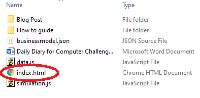
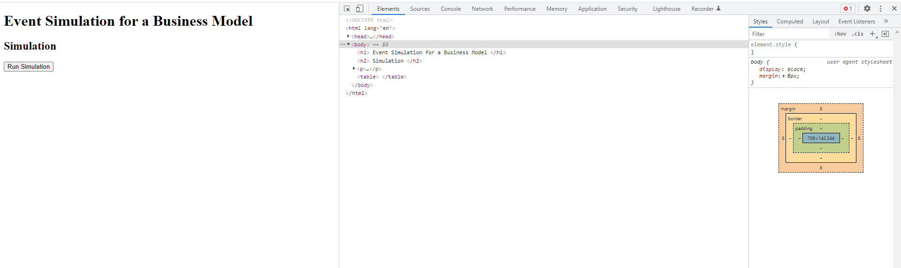
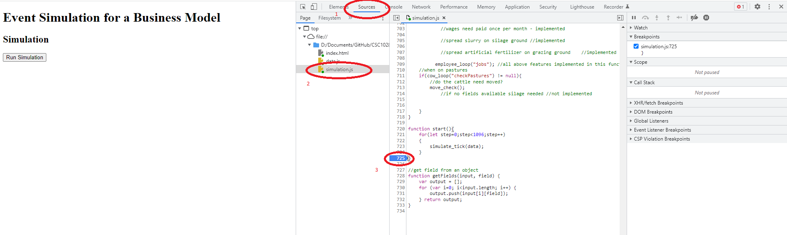
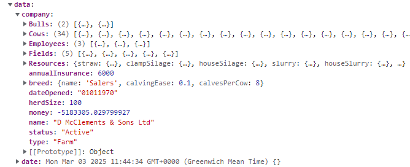

Running The Simulation
You can find the github repository for this project in the useful links section above.
In order to run the simulation download the repository and unzip it.

Once unzipped open the index.html file shown. This will then open in your
default browser. For this I'll be using chrome and recommend you do too as the
developer tools in it are easy to learn.
Once open, you can press F12 in order to open developer tools in the browser.
This will produce a screen similar to the image shown. In order to run the simulation
all you have to do is press the run simulation button on the webpage. However this doesn't
show any results as there is no output for the simulation as of writing this blog.

In order to see any results at the end of the simulation, open the simulation.js file in the source window of dev tools.
Then scroll down to line 725. If you click the number 725, a blue arrow will appear as shown in the image. This is called
a breakpoint. It will pause the program just before it ends to allow you to see any data it has calculated.

Now upon running you will get a screen that looks like this. In order to see the data produced by the
simulation you can expand the sections in the scope box of the dev tools. In order to see the main details,
expand the global section, then scroll down until you find a variable called data, expand this. Then expand the
company section. This then shows all of the data associated with the farm by the end of the simulation.
Now you can see the final data produced by the simulation. You can see how this data changes if the simulation's
variables are changed and how small changes can produce such different outcomes.
